Work through every module and pass each quiz to complete your tutor preparation. Score 70%+ on a module quiz to unlock the next one — there's no skipping ahead.
In this task, you can demonstrate your Python knowledge and your ability to assist students while writing projects — as well as your diligence, honesty, and willingness to follow the established guidelines. Your task is to create a game that meets the requirements below. You don’t need a super cool third-party project — you need a project that is a good fit for this specific task!
The project folder must include a readme.txt listing the used libraries and instructions on how to run the project.
The code must be entirely original and written independently. (The visuals do not need to be original.)
Only the following modules may be used:
Rect class from Pygame.You may only create a game of one of the following types:
The game must have a main menu with clickable buttons:
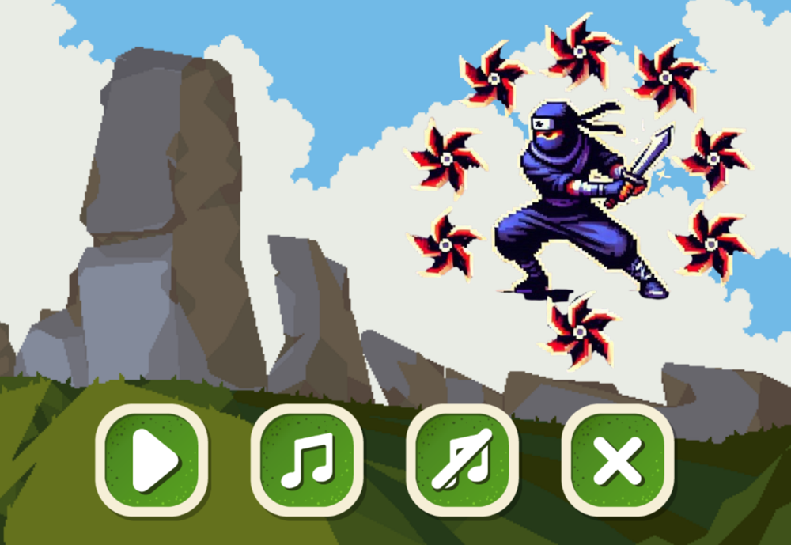
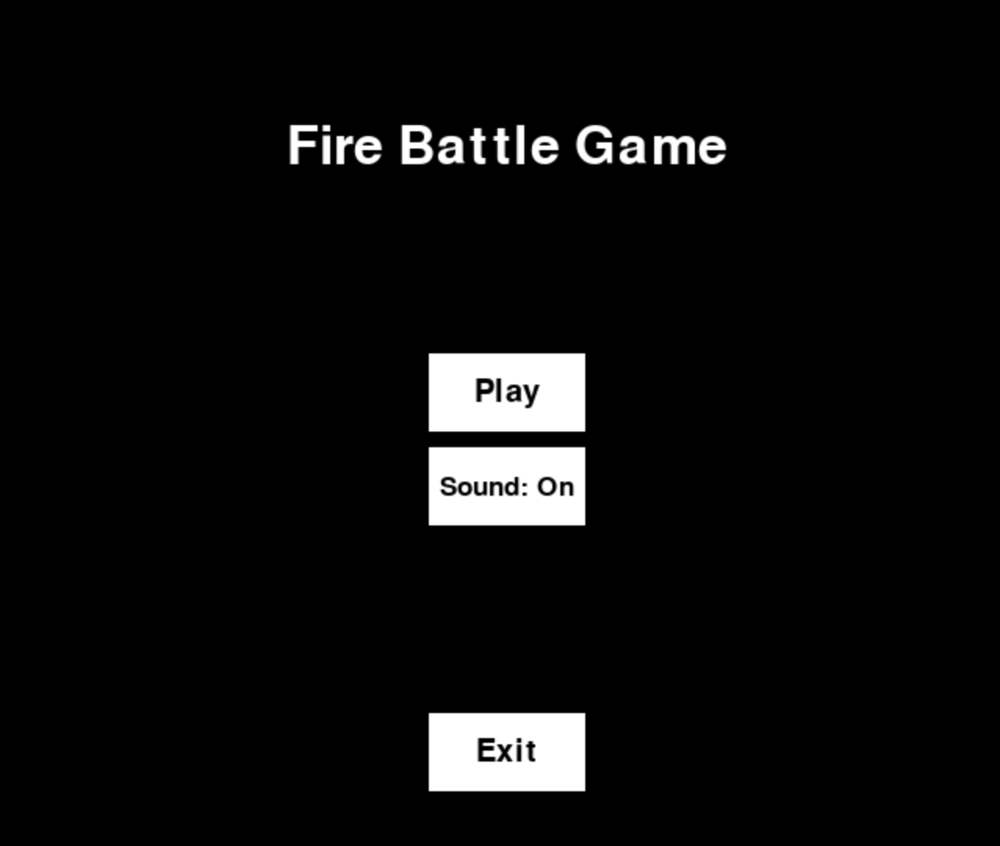
The game must have at least two different enemies that are dangerous to the hero.
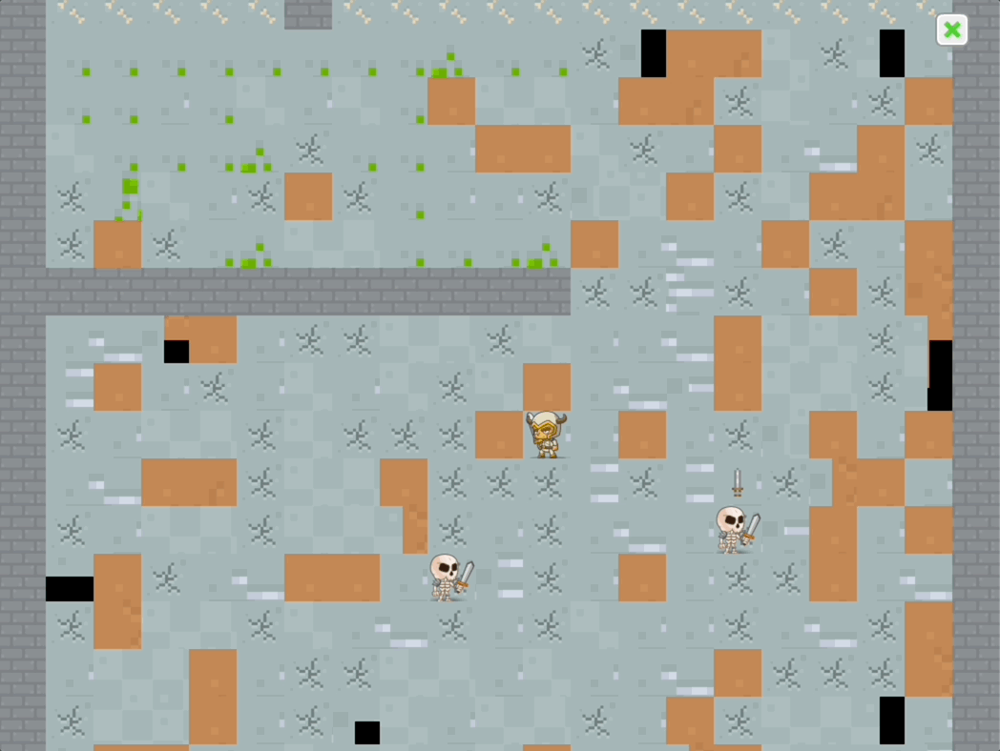
The enemies must move within their own areas.
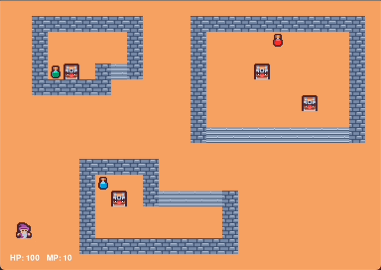
The game must have a logical game-ending mechanic without bugs — for both winning and losing.
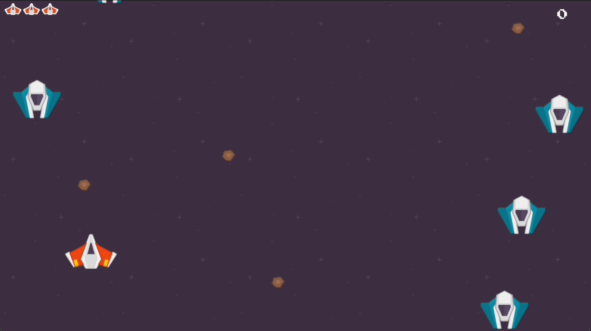
Both the player character and the enemies must have sprite animations for moving (for example, leg movements while walking).
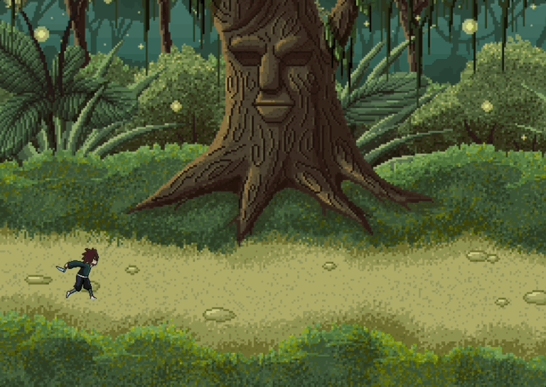
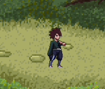
The game must have both background music and game sounds (sounds when the character attacks or collides with an enemy, a coin sound when collecting a reward, etc.).
Example sound resource: mixkit.co
Both the player character and the enemies must have idle animations (for example: breathing, looking around, moving fins, wagging tails, etc.).
Example visual resource: Kenney.nl
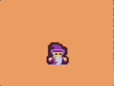
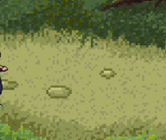
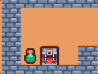
You must write your own classes to implement character movement and sprite animations. (Object-Oriented Programming)
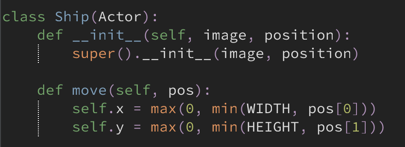
You must use clear, meaningful English names for variables, classes and functions — follow PEP 8 rules.
Upload the completed project to a cloud storage platform (Google Drive or GitHub) and make sure to provide access to the project folder. Please do NOT use compressed file formats!
Complete the skill test below and paste your project link as the answer to the final question.
Open the skill test form, complete it, and paste your project link as the final answer.
Open the Skill Test Form →Good luck! 🍀